Huy Hoan Dang (11458724) : Handle front page, design architecture, cart and order EJB container, and web service
Arun Jayaraj (11044942): Handle JPA, Database, Shop EJB Container.
This report provides information on implementing Olympic shopping cart and Java Enterprise technologies used to enhance the performance of the website. In our previous assignment we had implemented 3 tier architecture website, to improve in quality and performance multi tier architecture is used in current web application . The transformation of the website to multi tier is being implemented with Enterprise Java Bean (EJB), Java Persistence API (JPA), JSTL, JDBC - mysql , Java EE security role, Java server Page, Servlets and Web Service. These technologies help the vendor to change and make improvements on the underlying middleware layer without affecting a user’s existing enterprise applications. EJB and JPA play vital role in middleware to control access of database, business logic and controlling the application via a servlet.
The webservice is used by the suppliers to update and display the products, only certain right is invoked to suppliers to perform action and supplier need to authenticate for using service, the detailed overview of the webservice is illustrated with diagrams.
The report has detailed overview of the plan and the process involved in the web application this is illustrated using sequence diagram , class diagram and ERD diagram. Multi tier diagram is interpreted to show the overview of web application application and process involved.
Hence this document shows that our website is implemented multi tier architecture and deep knowledgeable thoughts is being illustrated with appropriate diagrams to prove our multi tier implementation.
Table of Content
1. N-Tier Architecture and MVC
1.1 Prototype of the Web application
1.3.1 Browsing Product Process:
1.3.2 Product Ordering Process
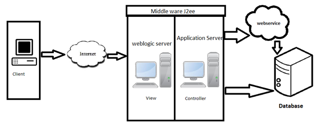
In the above scenario we have client, web logic server, application server and database. Client is access the application over internet where client side is totally independent from the application server side. In our web application weblogic server is a middleware server represented as view and controller. In view we have JSP, servlet and JSLT technologies to handle the requests and responses from the client. Where as controller updates the view for the client request. The model is a database where Java persistence API accesses the data from the database. So illustrating into our MVC model of the web application, we go into deep thoughts of analyzing the N-tier architecture.
In our web application we have technologies supported by JEE like Enterprise Java Bean, Java persistence API, SOAP webservice, WS-security, Java server page, JSTL and servlet.
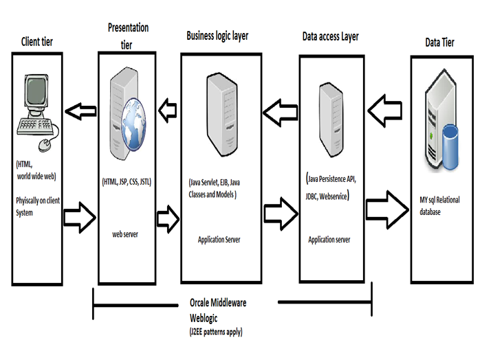
In the above diagram illustrates the n tier model of our web application here we have:
Presentation tier: In our web application we have we have integrated with jsp and JSTL technologies. The pages are not hardcoded, it is completely separated from the business logic and database. For example in our project we have product.jsp which displays the product lists, the message is sent by the controller servlet called main controller. When user click on categories only request for sent to controller and controller retrieves message for the client request.
Business logic layer: Servlet and EJB are the components which used in business logic tier. Well in our project servlet receives the request from the presentation tier JSP page, the request is processed and identifies the EJB model to process request to business model. EJB process the business logic based on message from servlet. In our we application we have request from the product to display, controller process the request choose appropriate business model in EJB. EJB process the message or input parameter from the servlet and business logic processed to retrieve information from the database via Java persistence API.
Data access tier: In the data access tier we have Java Persistance API. Connecting to our database and creating business model entity to access each table. We have ShopDAOImpl java class operate on CRUD methodlogy. And interface ShopDAO is used to call the CRUD method which access the entity of Java Persistance API. The connection is maintained purely xml descriptor, which avoids the hardcoding in java class.
Data tier is contains only component mysql database, where Java persistence API maintains the connections to web application.
User clicks on any category on the product menu to send a request action product and parameter category to servlet MainController. In the MainController, the parameter uses as an ID to initialise the correct list Product Model by connecting to the Database via EJB interface Shop.java which process model for display and use the JPA Product.java entity to access the data from the database . After EJB Shop.java processing the product model the EJB model processed to MainController which dispatches those of objects back to the View JSP file which is products.jsp. In order to display product’s information the product.jsp View will invoke back to the Product Model. Finally, the product.jsp View response the information to the client browser and display them.
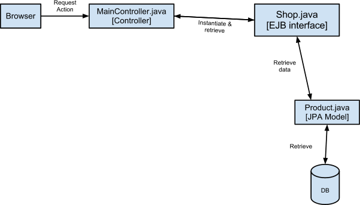
User from the products page clicks on add cart button on each product to send request action add cart and parameter productId to servlet CartController. In the CartController, the parameter productId uses as an ID to find the product information by connecting to the EJB Shop.java then instantiate the JPA Product model. After products chosen it is set in Cart.java JPA model , the CartController saves the cart’s information into a session and then send another request action cart and the session cart to the MainController. From there, the MainController dispatches the object back to the View JSP file which is cart.jsp. In order to display cart information, the cart.jsp View will invoke back to the Product and Cart Model to retrieve the product info. Finally, the cart.jsp View responses the information to the client browser and display them.
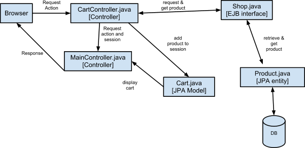
From the checkout page where user enter the information. After filling all the form which is triggered some validations the user information will be stored into a session. After that, the user clicks on proceed button to send request action proceed and to servlet OrderController. In the OrderController, the user session will be saved and processed in EJB Order.java and uses the JPA entity Customer to save customer values .After the EJB Order.java processes to save order by calling JPA Cart and Purchase entity. After that, the OrderController send back the orderId to the MainController in order to dispatch it to the success.jsp View. Finally, the success.jsp View responses the information to the client browser and display them.
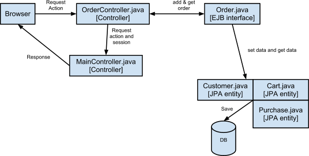
From the search page, user enter the order number and surname then click the search button. The browser send the request action search and orderid and surname to the servlet OrderController. In the OrderController, the Order and Customer Model will be instantiated by connecting to EJB Cart.java interface and it calls JPA entity Purchase model via JPA the database connection is made and data is retrieved. The OrderController sends the EJB object Cart.java interface to the MainController. From there, the MainController dispatches the object back to the View JSP file which is search_result.jsp. In order to display cart information, the search.jsp View will invoke back to the Purchase Model to retrieve the product info. Finally, the search.jsp View responses the information to the client browser and display them.
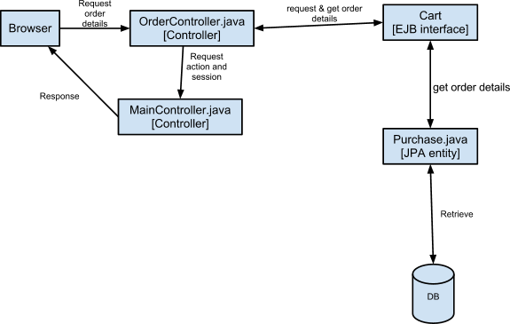
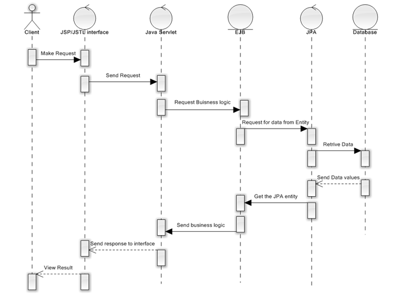
The above sequence diagram is general overview of our web application and providing view how the data is being processed.
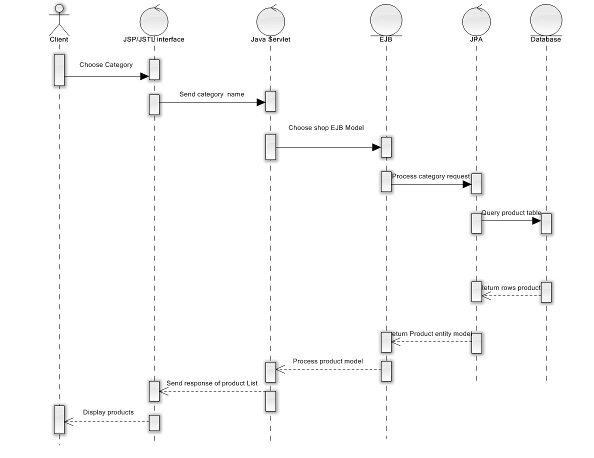
In the above Sequence diagram we have a scenario of ordering products
1. Client sends the request of category name via jsp page
2. Java servlet receives the request from the JSP page of category name.
3. Java servlet controls and invokes the EJB Shop.java interface.
4. The EJB calls the JPA JPQL query model ShopDAO to send parameter
5. ShopDAO process the query and returns Product JPA model to EJB Shop interface.
6. EJB sends the processed product model of data to java servlet.
7. Java servlet controls the data to display and response is sent back to product jsp page
8. jsp page controls the view for browser.
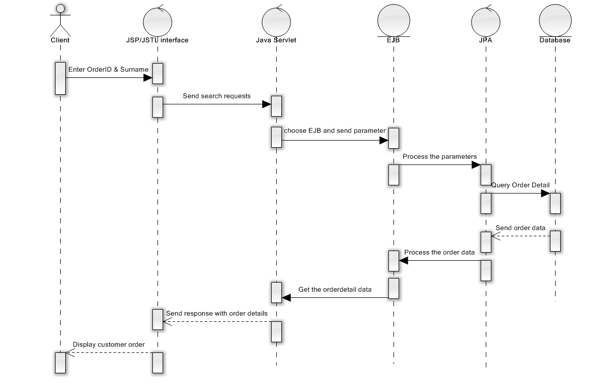
In the sequence diagram we have search for orders.
1.The user customer enters the orderID and surname to check the orders, status and products purchased.
2. User enter parameters the Controller choose the EJB and send data.
3. EJB processes the orderID and status
4. JPA sends the query to database. The ShopDAO.java which uses JPQL.
5. JPA produces the entity of Product list and purchase.
6. EJB process the JPA entities and process for display model.
7. Controller sends the resulting model consist of product list and purchase details to JSP.
8. JSP and JSTL handles the view on browser end.
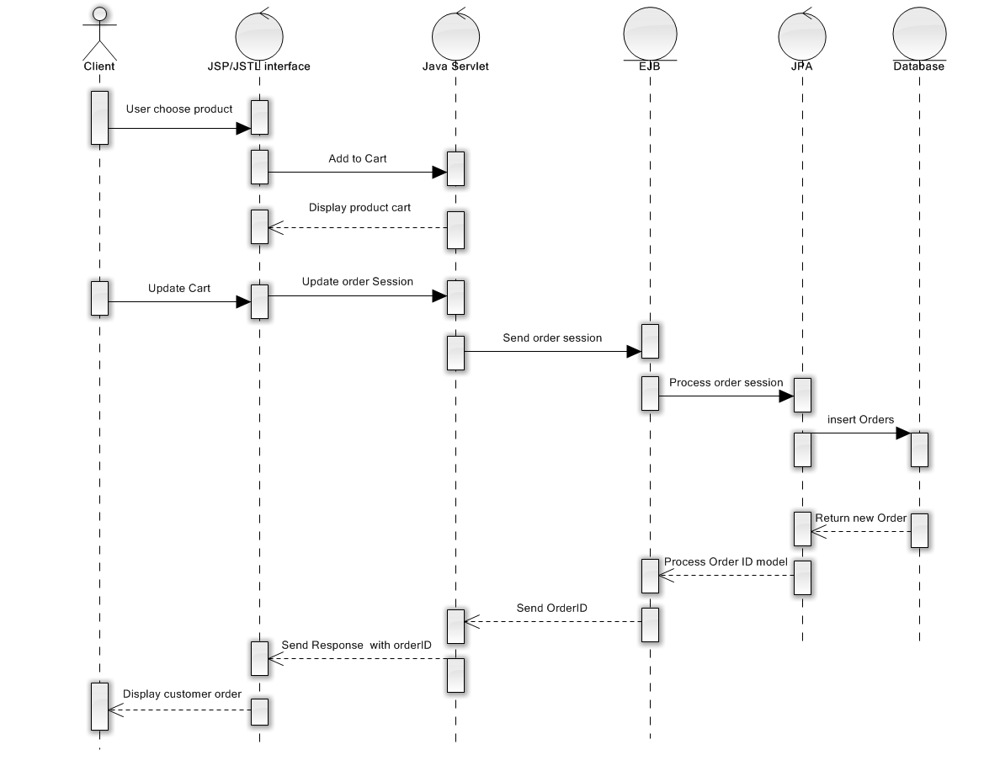
In the above sequence diagram we have ordering process.
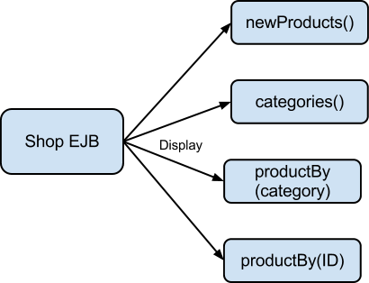
The role of shop ejb container is simply get the request action from the controller then process that requests with Database or do some business logic. For the current business logic, the shop ejb does 4 jobs display new products, categories, product by category and product by product id.
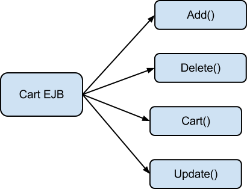
The role of Cart EJB is to process all the activity for the Shopping Cart functionality such as add products to cart, delete products from cart, update product information, display cart information.
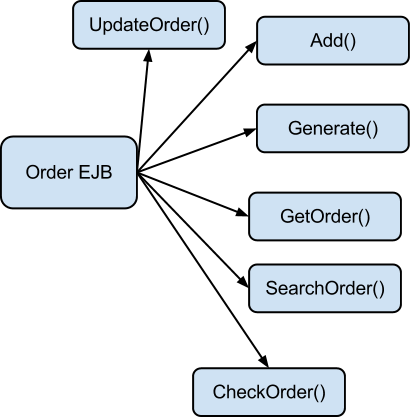
The role of Order Container is to process all the activities around the customer purchase such as adding order products and customer info to database, generate the order number with appropriate format, get the order when request needed, and check and update the status order.
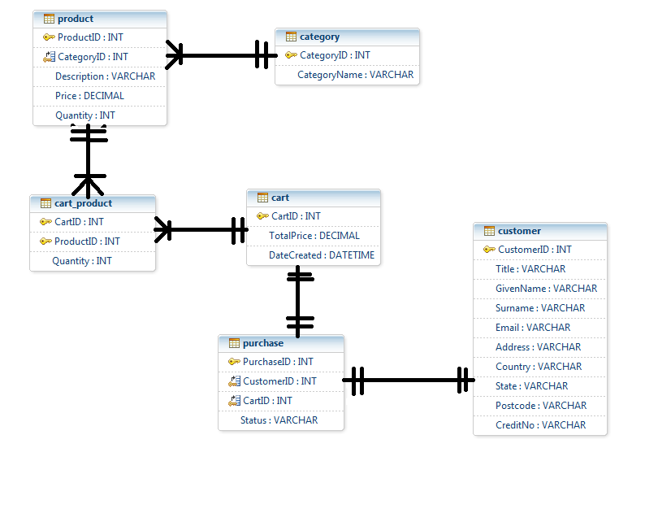
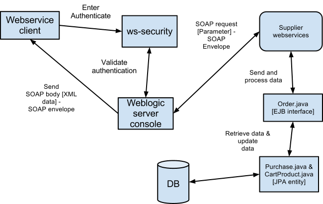
In the above diagram we have webservice client making request for Supplier webservice
before the requesting webservice supplier the client has to enter valid authentication to access the supplier webservice. The supplier connects to update and view paid purchase data.
Once the authentication is committed we supplier can process the update and view purchases list.
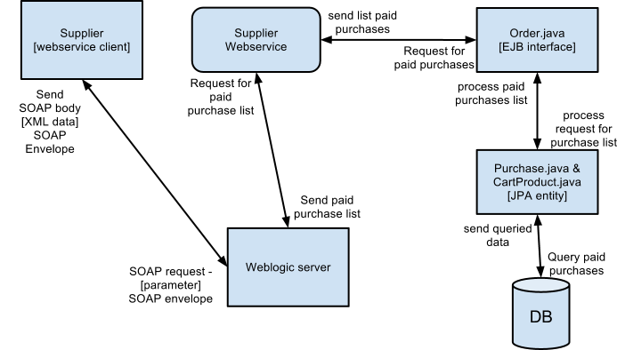
The diagram is the process of request from the supplier client to display the paid puchase list. In above scenario we have been reusing the EJB and JPA container which make our project more flexible. The EJB and JPA controls the business logic and display the values as per supplier request.
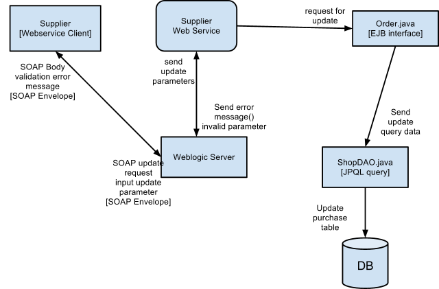
In above diagram we have scenario of updating order. Client input the results like orderID and status. The service handles the exception handling when he/ her tries to enter incorrect parameter values. The exception or error message is displayed to the client. The EJB controls the update of the process applying business process and there after ShopDAO is an interface which is JPQL model from where the query is parameters is inputed.
In this website, there are two areas need to be strictly protected - Admin and Web Service area. Due to the time consuming, we decided to prefer declarative authentication rather than programmatic.
Admin area is managed by order user role which is defined in weblogic server under Shop group
Web service area is managed by supplier user role which is defined in weblogic server under SupplierGroup.
The issue occurs when the web service is protected, there is no way to access the service on the server to test the function. It seems relevant because when the service deployed only the service client can access it with right permission and there should be no job for user in server to do with service.